Improving Deep Neural Networks: Hyperparameter Tuning, Regularization and Optimization
Cite
As in copyright:
DeepLearning.AI makes these slides available for educational purposes. You may not use or distribute these slides for commercial purposes. You may make copies of these slides and use or distribute them for educational purposes as long as you cite DeepLearning.AI as the source of the slides.
- Slides here are from DeepLearning.AI
Important Deadline
| Week | Deadline |
|---|---|
| 1 | 11 Sep |
| 2 | 18 Sep |
| 3 | 25 Sep |
Goal
- Practical aspects of deep learning
- Learn about hyperparameter tuning, regularization
- How to diagnose bias, and variants, and advance optimization algorithms, like momentum, armrest, prop, and the ad authorization algorithm
Week 1 - Practical Aspect of Deep Learning
Train / Dev / Test dataset splitting:
- Training set is used for training
- Dev set (i.e. Hold-out cross validation set), is used to cross validate performance of several models
- Test set is an unbiased dataset to estimate how well your model is
- Difference with Dev set → Your model actually has bias to the Dev set as well while tuning / cross validation
Dataset Distribution:
- 1st rule - keep all split dataset from the same distribution
- e.g.
Splitting ratio:
- It is common to split it like 70/30 or 60/20/20, IF THE DATASET IS NOT EXTREMELY HUGE
- If the dataset is like > 1,000,000, you can also set a max of dev/test dataset to be e.g. 1000 (i.e. a constant)
Bias & Variance:
- High Bias = underfitting
- High Variance = overfitting
- Note!!!! It is possible to be high bias & high variance at the same time.
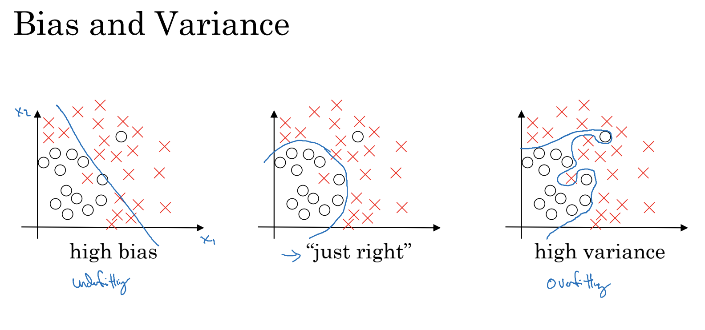
How we determine them from the metrics ?
Assume the bass error is ~ 0% (e.g. Human can almost identify if it is a cat image by 100% accuracy)
| Bias/Variance | Train set Error | Dev set Error |
|---|---|---|
| High bias | 15% | 16% |
| High variance | 1% | 11% |
| Both High!!! | 15% | 30% |
Solution to high bias / variance :
High Bias
- It is
**underfitting**to the training set (i.e. Model cannot “learn” enough from the training set features) - Use a larger neural network with more layers or units
- Change algorithm
High variance
- It is
**overfitting**to the training set - Use more data to train the network
- Regularization
- Change algorithm
Overfitting/underfitting - Regularization Techniques:
L2 norm
- Why not L1 norm ?
- It is said that L1 norm would make parameters matrix to be
Sparse(i.e. many zeros in matrix)
- It is said that L1 norm would make parameters matrix to be
- In calculating Cost func, add the L2 “penality”
- Then in the back propagation, this is added to calculating gradient
- The
lambdavalue here is a hyperparameter
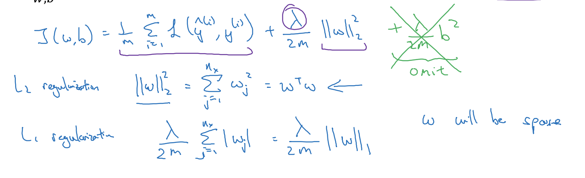
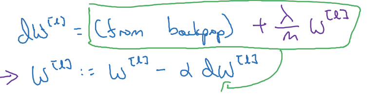
- How does it prevent overfitting ????
- If lambda is large, the result W will be small (more close to zero)
- Then, the Z will be fairly small and the activation function is roughly linear
- Recall from previous course:
- if Activation function is linear, the whole network tends to behave as a small network.
- i.e. It acts like a linear network and avoid overfitting
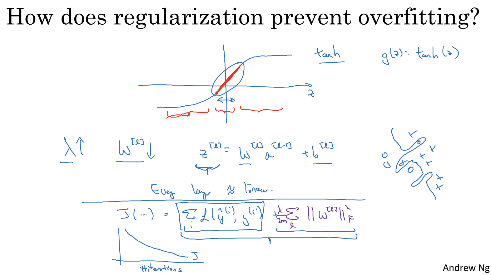
Dropout Regularization
- In every propagation, each units are decided randomly (by a configured probability, e.g. 0.5)
- i.e. each propagation uses a different set of units
- Note : the probability can be different between each layers e.g. last layer would not be overfitting so its probability is set to 1.0
- So, the
probabilityhere is a hyperparameter
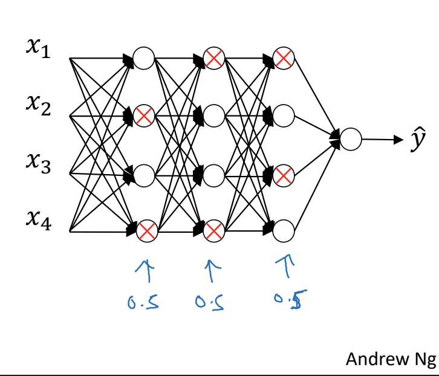
- Cautious !!! The activation value after dropout, need to be divide by the probability Because it is to keep the expected value to be the same level
- Cautious 2 !!! When doing a test prediction, do not apply dropout i.e. ONLY use dropout when “training” the model
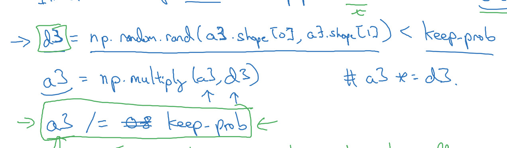
- How does it work???
- Somehow it forces the unit to NOT rely heavily on a specific features i.e. avoid overfitting
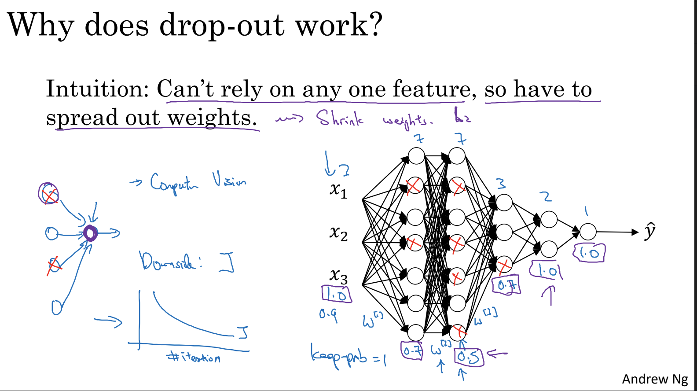
Other Regularization Methods
- Data augmentation
- To avoid heavy data annotation cost / impossible to get more data
- It increases the data size in a cheaper way
- Early Stopping
- The loss of dev dataset drops → increase after certain iteration
- It usually means overfitting takes place
An additional important concept here : It is better to tune hyperparameters of the same purpose at a certain time, not all together e.g. Tune those for optimizing Cost Function, then tune those for avoid overfitting…etc
Optimization - Normalize Input Data:
- Why need to normalize?
- To speed up the training, because the gradient descent can reach global minima faster
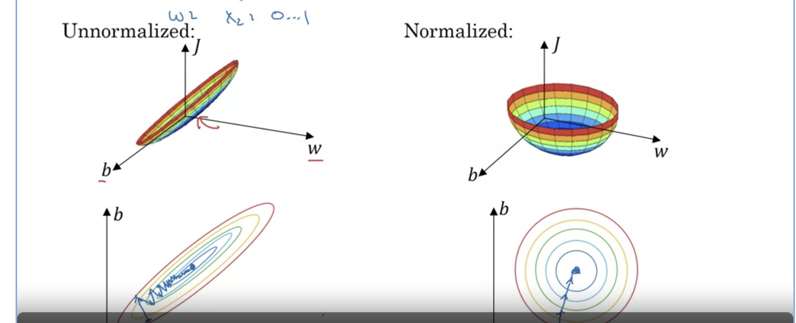
How does it work ?
One of the normalization method is called - standard scalar
Standardize features by removing the mean and scaling to unit variance.
Standard Scalar normalization
- 1st step - Subtract / Zero out the mean of
TRAINING DATA- So the input has a Zero mean
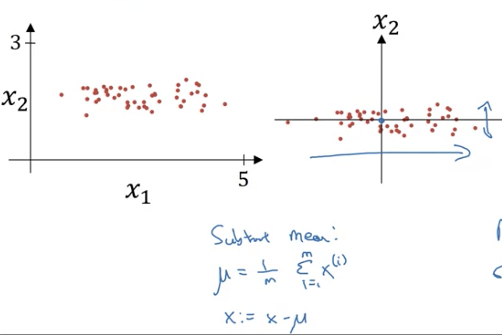
- 2nd step - normalize the variance
- e.g. x1 has a larger variance than x2
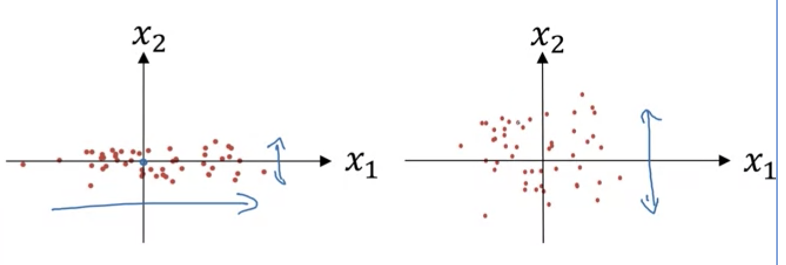
Some other common normalization
- Such as divide an image input by 255 if it is all RGB channel
Cautious !!! Use the calculated mean and sigma in test set or prediction as well Do not calculate a new one
Optimization - Vanishing / Exploding Gradient
What is this problem about ???
It can be proved by a simplified neural network, and we can know the output could be very large or small, depending on the number of layers.
Note that activation function was assumed to be nothing here. So in fact the output will not be REALLY large, but it is the concept only.
The output is still large enough so the training become very slow.
For example of a sigmoid activation function
The slope near z=0 or near 1 is extremely small, so the weights near those extremes will converge much more slowly to the solution, and having most of them near the center will speed the convergence.
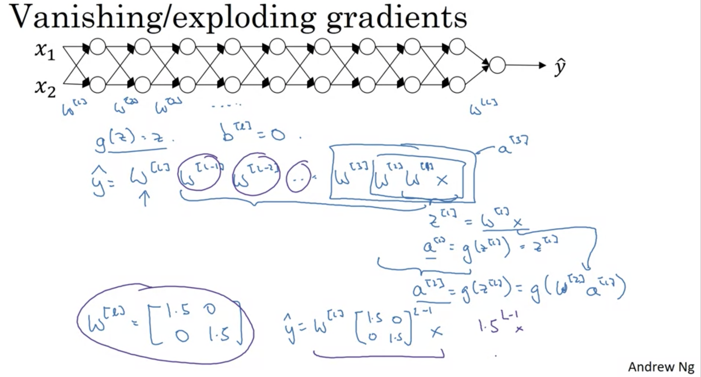
Solution - weight initialization
It is just a partial solution but it is still helpful. By using a correct weight initialization technique.
- For each layer, init the
wby multiply it with square root of1/n, where n is the unit number of previous layer(or input)- Reason - so the initial
wvalue is NOT too small or too large
- Reason - so the initial
- For ReLU, it is said that using
2/nis a better value, it is calledHe initialization, because it is named for the first author of He et al., 2015 - For Tanh,
1/n, it is also called**Xavier initialization** - For some other way, for example,
2/(n of l-1 + n of l)
Also, use np.random.randn, because it produces numbers in a normal distribution.
When used for weight initialization, randn() helps most the weights to Avoid being close to the extremes, allocating most of them in the center of the range.
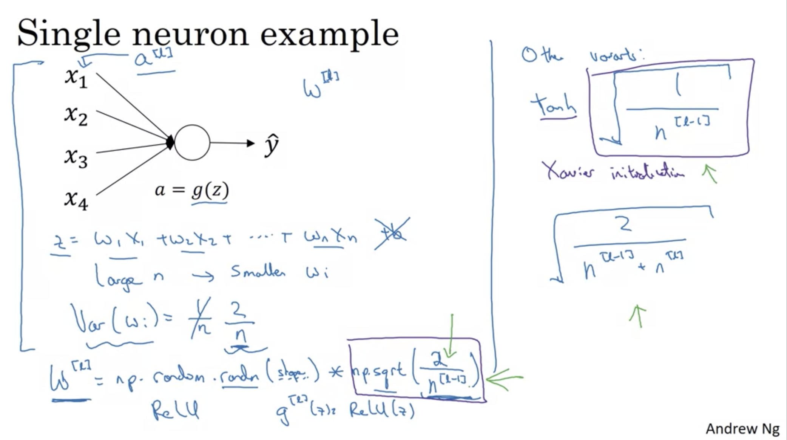
A conclusion of weight initialization :
| Model | Train accuracy | Problem/Comment |
|---|---|---|
| 3-layer NN with zeros initialization | 50% | fails to break symmetry |
| 3-layer NN with large random initialization | 83% | too large weights |
| 3-layer NN with He initialization | 99% | recommended method |
Gradient Checking:
It is a debugging step to ensure the gradient descent step you built is correct (especially back propagation)
How it works ???
- Calculate the
gradientvia back propagation- hints: convert them into 1-dim array (dW1, dB1, dW2, dB2…)
- Calculate the
approximate gradientmanually, by using theta + - epsilon For EACH parameters- hints: for each comparison(e.g.
dW1vsapprox_dW1), keep all other parameters unchanged - 1st - get TWO Cost
Jvia forward propagation of (W1+/-epsilon, B1, W2, B2…) - 2nd - calculate the slope(gradient) by \(\frac {J(+) - J(-)} { 2 epsilon}\)
- hints: for each comparison(e.g.
-
At last, compare both 1-dim array
gradvsapprox_grad\(\frac {\| grad - gradapprox \|_2}{\| grad \|_2 + \| gradapprox \|_2 }\)
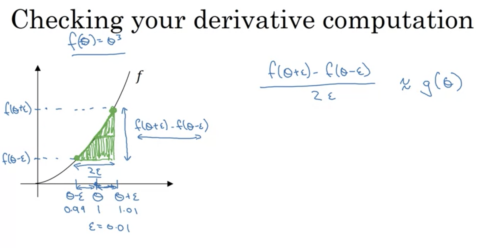
Note
- It cannot be used in dropout regularization
- solution - turn off dropout and do a gradient check first
- Only use it for debugging, not in the real training process
- A very rare case
- maybe grad check is correct when parameters are close to zero But incorrect when they are not.
- So in this case, can do a check after random init And do a new check after some training
Week 2 - Optimizing Algorithms
Batch / Mini-batch / Stochastic gradient descent:
Batch = Calculate gradient every whole training set , e.g. 1000 sample
Mini-batch = Calculate it for every subset of the whole training set, e.g. every 500 sample, i.e. 2 batches here
Stochastic = Calculate it for every SINGLE sample
Batch method only update after whole dataset, so the training speed can become slow.
Stochastic update the parameters for every sample, so it cannot make the most of vectorization, i.e. the calculation is slower, and the worst case is that it never reaches global minima.
As a result, mini-batch takes the good part from both of them.
Normally, the batch size is set to a number of \(2^{x}\) (e.g. 64, 128…etc) to fit the CPU/GPU memory
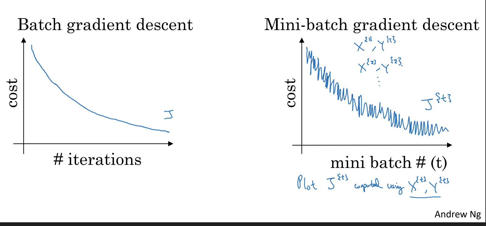
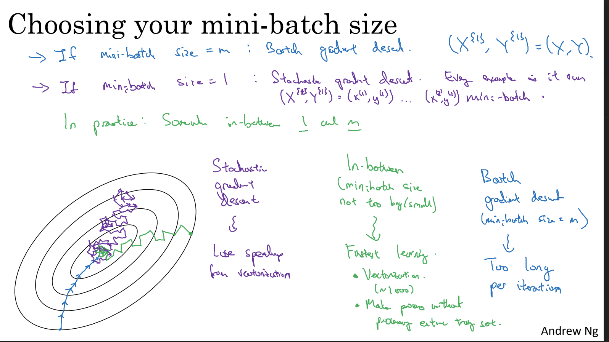
Fundamental concept - exponentially weighted averages:
This part is a fundamental knowledge before learning other optimization algorithms other than Gradient Descent.
For example it is the core concept of Gradient Descent with momentum.
How it works:
We can use exponentially weighted averages , to draw an average line.
(Here is a simplified calculation, without bias correction yet.)
e.g. the point at V1 is calculated by a weighted sum of previous V0 and current real value.
\(V_t = β V_{t-1} + (1-β) θ_t\)
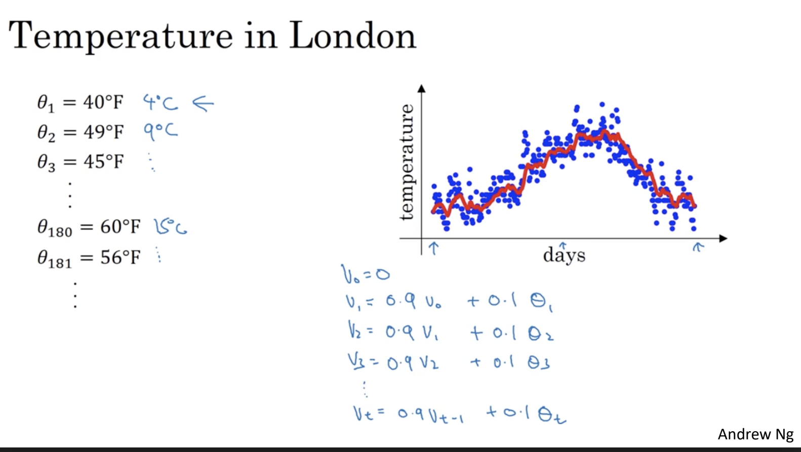
How β affects the averaged values ?
So the weight β here controls how many past records make influence to the current value.
- green line = larger beta, it appears to shift right side because it is “slower to change”
- yellow = small beta, the past values have less influence
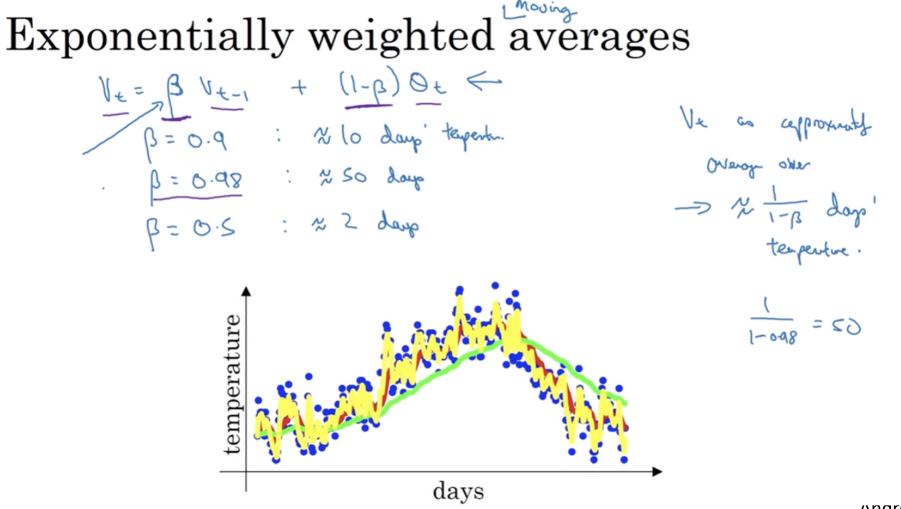
Bias Correction:
The above simplified calculation has a very small value in the early records.
So we sometimes apply a Bias correction.
The V value is calculated in the same way but divided by \((1-β^{t})\) at last, where t is the # of the record. So the calculated average value is more close to where they should be.
When t is small (but not zero), V is larger.
When t is larger (i.e. in a later point of data), this value become ~ 1 so it takes very less effect later, which is what we want.
Just keep in mind that if the iteration is large, most people will just ignore this bias correction.
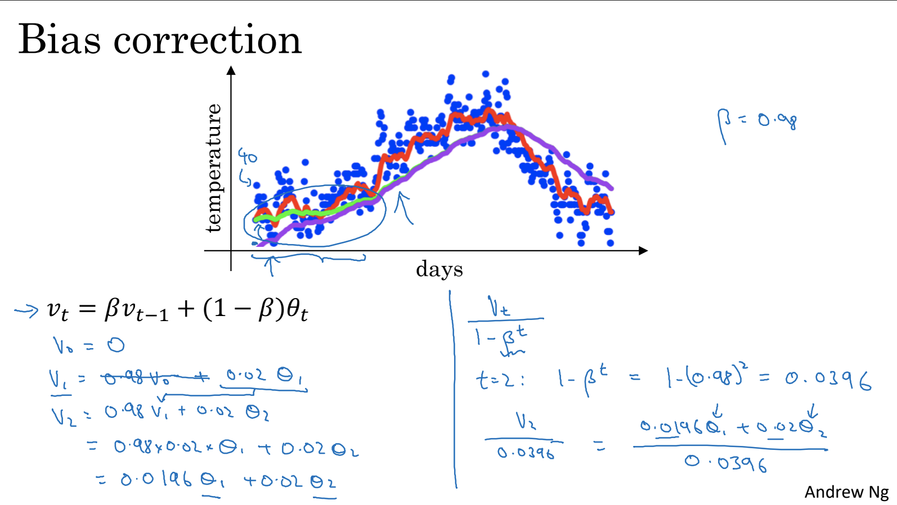
Gradient Descent with Momentum:
By applying exponentially weighted average during calculating the derivatives:
\(v_{dW} = β v_{dW} + (1-β)dW \\ v_{db} = β v_{db} + (1-β)db \\ Then, W = W - α v_{dW}, b = b - α v_{db}\)
Quiz notes:
v0 = 0
v1 = 0.5*v0 + 0.5*10
v2 = 0.5*v1 + 0.5*25 = 15
# I thought we should use corrected v1 to calculate v2 but wrong...
corrected_v1 = 5 / (1-0.5^1)
corrected_v2 = (0.5*corrected_v1 + 0.5*25)/(1-0.5^2)
Assignment:
- Common values for 𝛽β range from 0.8 to 0.999. If you don't feel inclined to tune this, 𝛽=0.9β=0.9 is often a reasonable default.
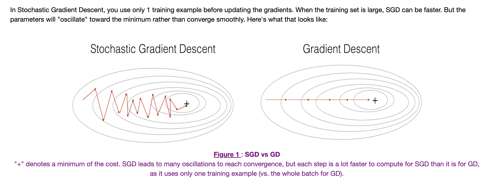
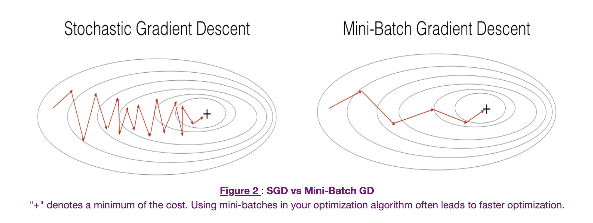
parameters = update_parameters_with_gd(parameters, grads, learning_rate)
"""
parameters -- python dictionary containing your parameters to be updated:
parameters['W' + str(l)] = Wl
parameters['b' + str(l)] = bl
grads -- python dictionary containing your gradients to update each parameters:
grads['dW' + str(l)] = dWl
grads['db' + str(l)] = dbl
learning_rate -- the learning rate, scalar.
"""
# below codes are provided
first_mini_batch_X = shuffled_X[:, 0 : mini_batch_size]
second_mini_batch_X = shuffled_X[:, mini_batch_size : 2 * mini_batch_size]
mini_batches = random_mini_batches(X, Y, mini_batch_size)
"""
Arguments:
X -- input data, of shape (input size, number of examples)
Y -- true "label" vector (1 for blue dot / 0 for red dot), of shape (1, number of examples)
mini_batch_size -- size of the mini-batches, integer
Returns:
mini_batches -- list of synchronous (mini_batch_X, mini_batch_Y)
"""
v = initialize_velocity(parameters)
"""
Initializes the velocity as a python dictionary with:
- keys: "dW1", "db1", ..., "dWL", "dbL"
- values: numpy arrays of zeros of the same shape as the corresponding gradients/parameters.
Arguments:
parameters -- python dictionary containing your parameters.
parameters['W' + str(l)] = Wl
parameters['b' + str(l)] = bl
Returns:
v -- python dictionary containing the current velocity.
v['dW' + str(l)] = velocity of dWl
v['db' + str(l)] = velocity of dbl
"""
Week 3
Assignment:
H5PY:
# How to use h5py
import h5py
train_dataset = h5py.File('datasets/train_signs.h5', "r")
test_dataset = h5py.File('datasets/test_signs.h5', "r")
Tensorflow:
# Access
## Tensor not allow you to print content directly, but have to use iterator/for-loop
print(next(iter(new_train)))
## Print info of a tensor
new_train.element_spec
"""Output
TensorSpec(shape=(12288,), dtype=tf.float32, name=None)
"""
# Declaration
## constant cannot be modified later
X = tf.constant(np.random.randn(3,1), name = "X")
## Variable can be modified
b = tf.Variable(np.random.randn(4,1), name = "b")
tf.zeros()
tf.ones()
# Operation
## Cast var
image = tf.cast(image, tf.float32) / 255.0
## reshape like numpy
image = tf.reshape(image, [-1,])
## = np_arr.T
tf.transpose(minibatch)
## tf cannot do vectorization like numpy, so need to use a map func
new_test = x_test.map(normalize_func)
## Add 2 tensor
Y = tf.add(X, b)
tf.math.add
## dot matrix
C = tf.matmul(W, X)
tf.linalg.matmul
## Pair up two tensor
dataset = tf.data.Dataset.zip((X_train, Y_train))
# ML func
## activation func
a = tf.keras.activations.sigmoid(z)
a = tf.keras.activations.softmax(z)
a = tf.keras.activations.relu(z)
## one-hot encoding
indices = [0, 1, 2]
depth = 3
tf.one_hot(indices, depth)
"""output: [3 x 3]
[[1., 0., 0.],
[0., 1., 0.],
[0., 0., 1.]]
"""
## Initialize vectors - glorot initializer, it draws numnber from a truncated normal distribution
initializer = tf.keras.initializers.GlorotNormal(seed=1)
W1 = tf.Variable(initializer(shape=(25,12288)))
## Split dataset into minibatches AND preload for streaming(by prefetch)
minibatches = dataset.batch(minibatch_size).prefetch(8)
## Training - calculate backpropagation automatically
with tf.GradientTape() as tape:
y_pred = forward_propagation(X, parameters) # 1. predict, (the func is custom made)
minibatch_cost = compute_cost(y_pred, y_true) # 2. loss, (the compute_cost is custom made, return a cost value)
trainable_variables = [W1, b1, W2, b2, W3, b3] # define what will be updated during backprop
grads = tape.gradient(minibatch_cost, trainable_variables) # auto-calculate backprop
## Cost func of category classification (categorical_crossentropy)
before_sum = tf.keras.losses.categorical_crossentropy(
y_true_onehot, y_pred, from_logits=True # if false, logits should be probability
)
## Optimizer
optimizer = tf.keras.optimizers.Adam(learning_rate) # init
optimizer.apply_gradients(zip(grads, trainable_variables)) # update
## Metrics
## The CategoricalAccuracy will track the accuracy for this multiclass problem
test_accuracy = tf.keras.metrics.CategoricalAccuracy() # init
train_accuracy.update_state(y_true, y_pred) # update metric
train_accuracy.reset_states() # reset to 0, e.g. starting of each epoch
Sample of model fitting with tf
def model(X_train, Y_train, X_test, Y_test, learning_rate = 0.0001,
num_epochs = 1500, minibatch_size = 32, print_cost = True):
"""
Implements a three-layer tensorflow neural network: LINEAR->RELU->LINEAR->RELU->LINEAR->SOFTMAX.
Arguments:
X_train -- training set, of shape (input size = 12288, number of training examples = 1080)
Y_train -- test set, of shape (output size = 6, number of training examples = 1080)
X_test -- training set, of shape (input size = 12288, number of training examples = 120)
Y_test -- test set, of shape (output size = 6, number of test examples = 120)
learning_rate -- learning rate of the optimization
num_epochs -- number of epochs of the optimization loop
minibatch_size -- size of a minibatch
print_cost -- True to print the cost every 10 epochs
Returns:
parameters -- parameters learnt by the model. They can then be used to predict.
"""
costs = [] # To keep track of the cost
train_acc = []
test_acc = []
# Initialize your parameters
#(1 line)
parameters = initialize_parameters()
W1 = parameters['W1']
b1 = parameters['b1']
W2 = parameters['W2']
b2 = parameters['b2']
W3 = parameters['W3']
b3 = parameters['b3']
optimizer = tf.keras.optimizers.Adam(learning_rate)
# The CategoricalAccuracy will track the accuracy for this multiclass problem
test_accuracy = tf.keras.metrics.CategoricalAccuracy()
train_accuracy = tf.keras.metrics.CategoricalAccuracy()
dataset = tf.data.Dataset.zip((X_train, Y_train))
test_dataset = tf.data.Dataset.zip((X_test, Y_test))
# We can get the number of elements of a dataset using the cardinality method
m = dataset.cardinality().numpy()
minibatches = dataset.batch(minibatch_size).prefetch(8)
test_minibatches = test_dataset.batch(minibatch_size).prefetch(8)
#X_train = X_train.batch(minibatch_size, drop_remainder=True).prefetch(8)# <<< extra step
#Y_train = Y_train.batch(minibatch_size, drop_remainder=True).prefetch(8) # loads memory faster
# Do the training loop
for epoch in range(num_epochs):
epoch_cost = 0.
#We need to reset object to start measuring from 0 the accuracy each epoch
train_accuracy.reset_states()
for (minibatch_X, minibatch_Y) in minibatches:
with tf.GradientTape() as tape:
# 1. predict
Z3 = forward_propagation(tf.transpose(minibatch_X), parameters)
# 2. loss
minibatch_cost = compute_cost(Z3, tf.transpose(minibatch_Y))
# We accumulate the accuracy of all the batches
train_accuracy.update_state(minibatch_Y, tf.transpose(Z3))
trainable_variables = [W1, b1, W2, b2, W3, b3]
grads = tape.gradient(minibatch_cost, trainable_variables)
optimizer.apply_gradients(zip(grads, trainable_variables))
epoch_cost += minibatch_cost
# We divide the epoch cost over the number of samples
epoch_cost /= m
# Print the cost every 10 epochs
if print_cost == True and epoch % 10 == 0:
print ("Cost after epoch %i: %f" % (epoch, epoch_cost))
print("Train accuracy:", train_accuracy.result())
# We evaluate the test set every 10 epochs to avoid computational overhead
for (minibatch_X, minibatch_Y) in test_minibatches:
Z3 = forward_propagation(tf.transpose(minibatch_X), parameters)
test_accuracy.update_state(minibatch_Y, tf.transpose(Z3))
print("Test_accuracy:", test_accuracy.result())
costs.append(epoch_cost)
train_acc.append(train_accuracy.result())
test_acc.append(test_accuracy.result())
test_accuracy.reset_states()
return parameters, costs, train_acc, test_acc
One Hot encodings
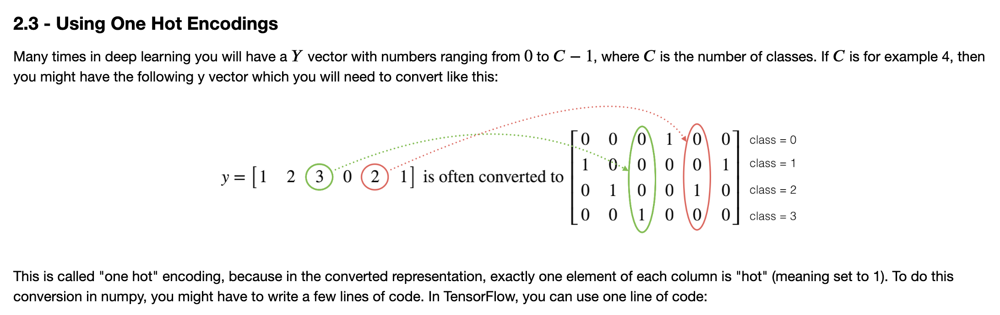